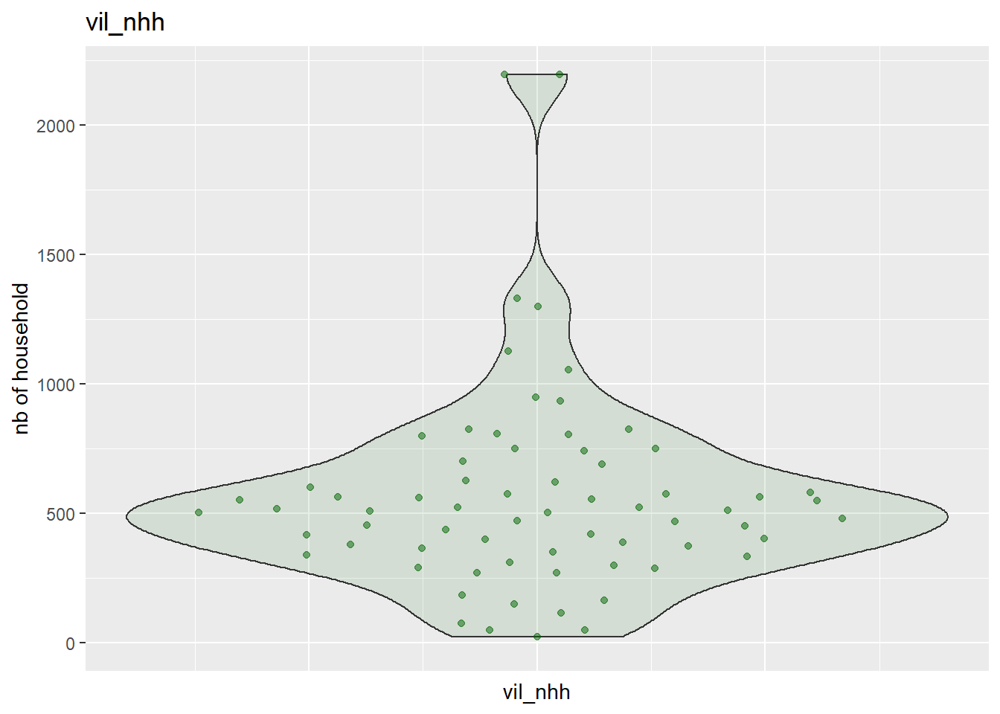
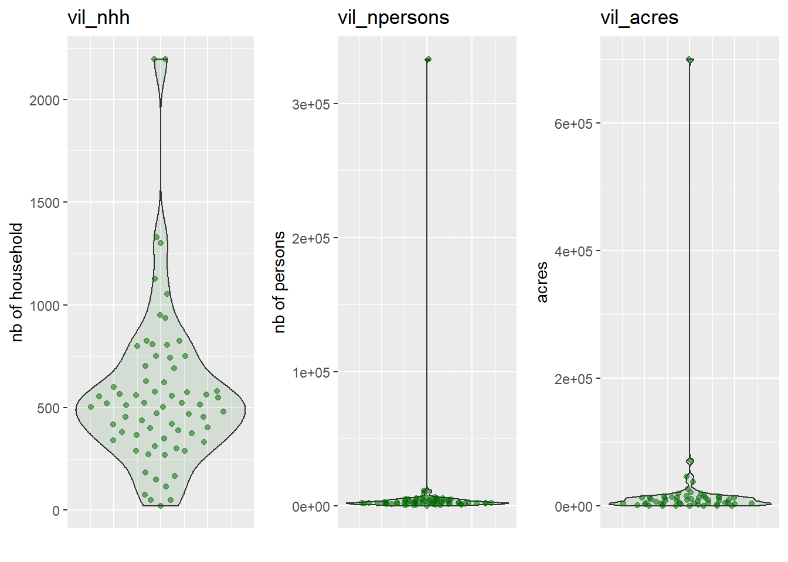
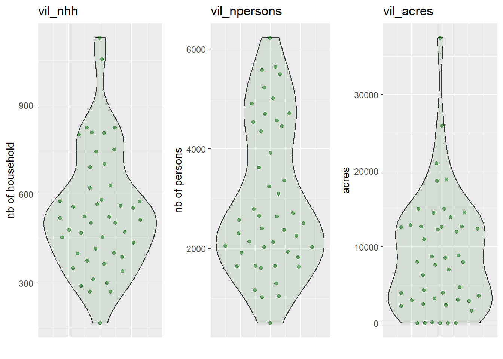
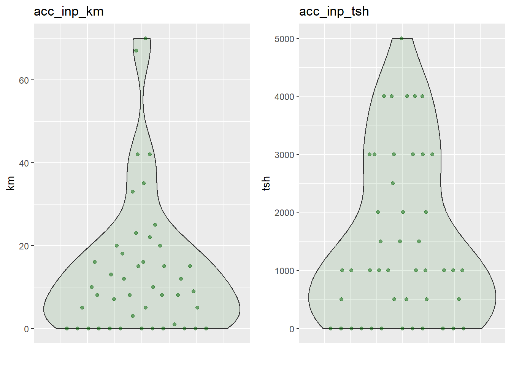
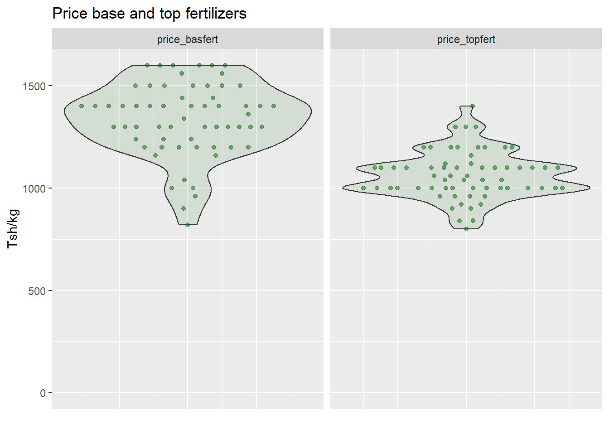
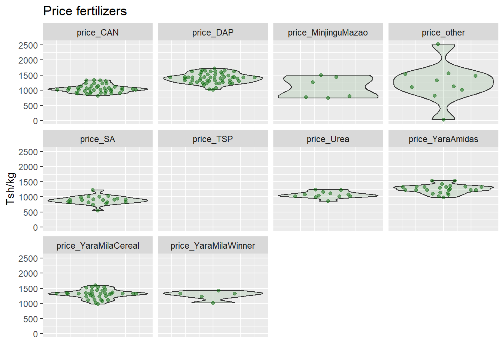
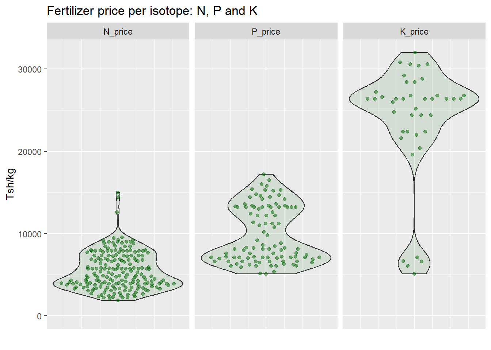
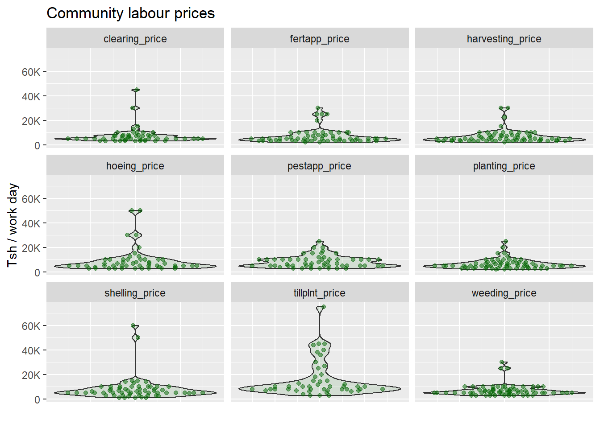

4 Community survey
Mainly contains information about access to services, field-labour price, seed and input prices.
4.1 Intervening datasets
| Description | File |
|---|---|
| Community main file | TZAPS17_cmty.tab |
| Community metadata | TZAPS17_ODK_community.xlsx |
4.2 Prepare dataset
cmty <- read.table(here("./data/TAMASA2017/TZAPS17_cmty.tab"),
header = TRUE,
sep = "\t",
stringsAsFactors = FALSE)cmty$village[cmty$village == "OTHER"] <- cmty$village_alt[cmty$village == "OTHER"]
cmty$hamlet[cmty$hamlet == "OTHER"] <- cmty$hamlet_alt[cmty$hamlet == "OTHER"]Set zone and region as factors with legible levels
md_geo <- readxl::read_xlsx(here("./data/TAMASA2017/metadata/TZAPS17_ODK_community.xlsx"),
sheet = "external_choices")
md_region <- md_geo %>% filter(list_name == "regions")
md_district <- md_geo %>% filter(list_name == "districts")cmty$zone <- as.factor(cmty$zone)
cmty$region <- factor(cmty$region,
levels = md_region$name,
labels = md_region$label)
cmty$district <- factor(cmty$district,
levels = md_district$name,
labels = md_district$label)Decriptive variables:
cmty_index: community index, field with only unique values:TRUE.enum_date: date of the survey.zone > region > district > site > ward > village > hamlet: spatial hierachy.comm_gps: community GPS coordinates.
Quantitative variables :
vil_nhh: number of households in the village.vil_npersons: number of persons in the village.vil_acres: approximate size of the village in acres.acc_inp_km: distance to input dealer in km.acc_inp_tsh: cost of transport in Tsh.
cmty_info <- cmty %>%
select(cmty_index, enum_date, zone, region, district, site, ward, village,
hamlet, comm_gps, vil_nhh, vil_npersons, vil_acres, acc_inp_km, acc_inp_tsh)Data is available for 68 communities threw out the country.
The quantitative variables should be strictly positive. Scan for negative values:
## [1] "vil_npersons" "vil_acres"and replace existing ones by NA.

plot_var_matrix(df = cmty_info,
vars = c("vil_nhh", "vil_npersons", "vil_acres"),
plot.unit = c("nb of household", "nb of persons", "acres"),
plot.dim = c(1, 3))
cmty_info <- modify_at(.x = cmty_info,
.at = c("vil_nhh", "vil_npersons", "vil_acres"),
.f = outlier_to_NA,
quantile = 0.95)del_NA <- cmty_info %>%
select(starts_with("vil_")) %>%
map(~ which(is.na(.x))) %>%
unlist() %>%
unique()
cmty_info <- cmty_info[-del_NA, ]## [1] 46 15plot_var_matrix(df = cmty_info,
vars = c("vil_nhh", "vil_npersons", "vil_acres"),
plot.unit = c("nb of household", "nb of persons", "acres"),
plot.dim = c(1, 3))
plot_var_matrix(
df = cmty_info,
vars = c("acc_inp_km", "acc_inp_tsh"),
plot.unit = c("km", "tsh"),
plot.dim = c(1, 2)
)
A number of communities are said to be located at a 0 km from an input dealer or to have null input transportation cost. It can be that these communities are indeed located nearby a supplier or most likely that they simply do not use additional inputs.
4.3 Seed buying prices
The community datasets contains a varierty of variables related to maize prize.
Those 9 variables, all prefixed by maiprc, provide the price in Tsh of a 50 kg bag of maize seeds at two possible locations (depot or town) in four different time periods (q1, q2, q3 and q4).
Locations:
depot refers to a large commercial depot compare to town which is supposed to be the regular market place gor example in the district town.
Time periods:
| Buying place | Apr-Jun 2016 | Jul-Sep 2016 | Oct-Dec 2016 | Jan-Mar 2017 |
|---|---|---|---|---|
| depot | q1 | q2 | q3 | q4 |
| town | q1 | q2 | q3 | q4 |
Is there any price variable wiht a negative price ?
## [1] "maiprc_depot_q1" "maiprc_depot_q2" "maiprc_depot_q3" "maiprc_depot_q4" "maiprc_town_q1" "maiprc_town_q2"
## [7] "maiprc_town_q3" "maiprc_town_q4"Convert price from Tsh/50 kg bag to Tsh/kg
plot.unit = "Tsh/kg"
title = "Maize price"
cmty_seed %>%
pivot_longer(cols = maiprc,
names_to = "category",
values_to = "value") %>%
separate(col = category, into = c("maiprc", "place", "trimester"), sep = "_") %>%
plot_var(var = value, plot.unit = plot.unit)+
facet_grid(place ~ trimester)+
xlab("")+
ggtitle(title)Replace extreme values by NA
and delete any community harbouring NA for any variable
del_NA <- cmty_seed %>%
map(~ which(is.na(.x))) %>%
unlist() %>%
unique()
cmty_seed <- cmty_seed[-del_NA, ]plot.unit = "Tsh/kg"
title = "Maize price"
cmty_seed %>%
pivot_longer(cols = maiprc,
names_to = "category",
values_to = "value") %>%
separate(col = category, into = c("maiprc", "place", "trimester"), sep = "_") %>%
plot_var(var = value, plot.unit = plot.unit)+
facet_grid(place ~ trimester)+
xlab("")+
ggtitle(title)
4.4 Fertilizer prices
4.4.1 Selected variables
4.4.1.1 Standard bag
Cost in Tsh of a 50 kg bag of fertilizer from the nearest input dealer:
fmkt_pri_bas: basal fertlizer, (compound D). One of the most used fertlizer (cf:http://www.fao.org/3/a0395e/a0395e0a.htm).fmkt_pri_top: top-dressing fertilizer (urea).fmkt_mkt_trp: transport.
4.4.1.2 Other variables
Those variables do not relate to a fix amount of fertilizer.
They all start with the prefix price. The middle part is then a code for the type of input:
| code | fertilizer |
|---|---|
| fert1 | SA |
| fert2 | DAP |
| fert3 | CAN |
| fert4 | Urea |
| fert5 | TSP |
| fert6 | MinjinguMazao |
| fert7 | YaraMilaCereal |
| fert8 | YaraAmidas |
| fert9 | YaraMilaWinner |
| fert10 | other |
| oinp1 | pesticide (for field use not storage) |
| oinp2 | herbicide |
| oinp4 | fungicide |
Lastly, a suffix indicates the type of variable:
| suffix | variable |
|---|---|
| tsh | price in Tsh |
| amt | amount |
| unit | unit |
Example: price_fert2_amt amount of DAP, given in the unit indicated in price_fert2_unit and corresponding to the price in Tsh in price_fert2_tsh.
4.4.2 Subset main community data.frame
cmty_fert <- cmty %>%
select(cmty_index,
starts_with("fmkt"),
matches("^price_oinp[^3]"),
starts_with("price_fert"))Any variables with negative values ?
## [1] "fmkt_pri_bas" "fmkt_pri_top" "fmkt_mkt_trp" "price_oinp2_tsh" "price_oinp1_tsh" "price_oinp4_tsh"
## [7] "price_fert1_tsh" "price_fert2_tsh" "price_fert3_tsh" "price_fert4_tsh" "price_fert5_tsh" "price_fert6_tsh"
## [13] "price_fert7_tsh" "price_fert8_tsh" "price_fert9_tsh" "price_fert9_amt" "price_fert10_tsh"The value -98 seems to be the recurring place holder for missing value, sometimes it is also mislabelled as 98…
## cmty_index price_oinp2_tsh price_fert1_tsh
## 42 42 -98 60000
## 54 54 -98 98Replace those place holder values by NA.
4.4.3 Calculate price in Tsh/kg for each fertilizer
4.4.3.1 Transport price per kg
Transport price is assume to scale linearly with the amount being transported and is calculated by simply dividing the cost of transport of a 50kg fetlizer bag by 50.


4.4.3.2 Price Tsh/kg
Per unit category, per fertilizer type, calculate price in Tsh/kg as:
\(Price_{(Tsh.kg^{-1})} = \frac{Price_{(Tsh)}}{amount_{(kg)}} + transport_{(Tsh.kg^{-1})}\)
4.4.3.3 Keep only transformed variables
cmty_fert <- cmty_fert %>%
select(cmty_index, fmkt_pri_bas, fmkt_pri_top, transp_price,
paste0("price_", pesticide[!is.na(pesticide)]),
paste0("price_", fertilizer))Rename standard bag variables (fmkt)
Convert those in price per kg
4.4.3.4 Visual exploration
plot_var_facet(cmty_fert,
vars = c("price_basfert", "price_topfert"),
plot.unit = "Tsh/kg",
title = "Price base and top fertilizers")
var_fert <- map(fertilizer, ~ grep(.x, colnames(cmty_fert), value = TRUE)) %>% unlist()
plot_var_facet(cmty_fert,
vars = var_fert,
plot.unit = "Tsh/kg",
title = "Price fertilizers")
price_TSP, all NA ?: TRUE.
## price_fert5_tsh price_fert5_amt price_fert5_unit
## 1 -98 1 3
## 2 -98 1 3
## 3 -98 1 3
## 4 -98 1 3
## 5 -98 1 3
## 6 -98 1 3##
## -98 50000
## 66 1var_pest <- map_chr(pesticide[!is.na(pesticide)],
~ grep(.x, colnames(cmty_fert), value = TRUE))
plot_var_facet(cmty_fert,
vars = var_pest,
plot.unit = "Tsh/kg",
title = "Price inputs other than fertilizers")
4.4.4 Price of N, P and K in \(Tsh.kg^{-1}\)
We now calculate the price of fertilizer by isotopes, namely N, P and K. This price corresponds to the price of a given raw isotope in \(Tsh.kg^{-1}\). We do not take into account the difference in terms of availability of N, P and K per fertilizer type.
Modified input names in dedicatd dictionary (dics$inp) so that they match community data names.
Temporarily transform cmty_fert to long format to be able to join it with dics$inp and perform calculations.
cmty_fert_l <- cmty_fert %>%
select(cmty_index, starts_with("price")) %>%
pivot_longer(cols = str_subset(colnames(cmty_fert), "^price"),
names_to = "input",
values_to = "price")
cmty_fert_l$input <- str_extract(cmty_fert_l$input, "(?<=price_).*")Perform calculation and transform back to wider format cmty_fert.
cmty_fert_l <- cmty_fert_l %>% full_join(dics$inp,
by = c("input" = "input_mod"),
suffix = c(".x", ".dic"))Define function to divide fertilizer price by concentration only if the concentration of a given isotope is different from 0.
isotope_price <- function(price, conc){
map2_dbl(.x = price, .y = conc, function(.x, .y){ ifelse(.y != 0, .x/.y, NA)})
}Calculate price per isotope.
cmty_fert_l <- cmty_fert_l %>% mutate(N_price = isotope_price(price, Nconc),
P_price = isotope_price(price, Pconc),
K_price = isotope_price(price, Kconc))Convert to wider format.
cmty_fert_NPK <- cmty_fert_l %>%
pivot_wider(names_from = "input", values_from = 'price')%>%
select(cmty_index, input.dic, matches("^[A-Z]_price$")) %>%
rename(input_type = input.dic)Delete rows without any input or isotope price.
Plot results.
dNPK <- pivot_longer(cmty_fert_NPK, cols = paste0(c("N", "P", "K"), "_price"),
names_to = "category",
values_to = "value")
dNPK$category <- factor(dNPK$category, levels = c("N_price", "P_price", "K_price"))
plot_var(dNPK, var = value, plot.unit = plot.unit)+
facet_wrap(. ~ category)+
xlab("")+
ggtitle("Fertilizer price per isotope: N, P and K")
4.5 Labour cost
Cost of hiring one adult man for one labour day.
Labour variables:
- prefix:
labprc. - code:
clearing,hoeing,planting,tillplnt,fertapp,weeding,pestapp,harvesting,shelling, pretty transparent excepttillplant= tilling and planting together. - suffix:
price.
4.5.1 Subset main community data.frame
Get rid of variable prefix.
Get all labour variable names.
Any variables with negative values ?
## [1] "clearing_price" "hoeing_price" "planting_price" "tillplnt_price" "fertapp_price" "pestapp_price"
## [7] "harvesting_price" "shelling_price"Replace negative values by NA.
4.5.2 Visual exploration
plot_var_facet(cmty_labour,
vars = lab_vars,
plot.unit = "Tsh / work day",
title = "Community labour prices") +
scale_y_continuous(labels = scales::label_number_si())
plot_var_facet(cmty_labour,
vars = lab_vars,
plot.unit = "Tsh / work day",
title = "Community labour prices") +
scale_y_continuous(labels = scales::label_number_si())
4.6 Merge
Merge together.
community <- reduce(list(cmty_info, cmty_seed, cmty_fert, cmty_labour),
inner_join,
by = "cmty_index")Save intermediate dataset.
Save separate dataset with fertilizers isotope prices.
4.7 Recap
4.7.1 Community general dataset
| Variable | Description | Unit | Type |
|---|---|---|---|
| cmty_index | community index | - | integer |
| enum_date | survey date | - | date |
| zone | zone | - | character |
| region | region | - | character |
| district | district | - | character |
| site | site | - | character |
| ward | ward | - | character |
| village | village | - | character |
| hamlet | hamlet | - | character |
| comm_gps | latitude and longitude of community | - | coordonates |
| vil_nhh | number of households in village | - | integer |
| vil_npersons | number of persons in village | - | integer |
| vil_acres | approximative village area | \(acres\) | integer |
| acc_inp_km | distance to nearest input dealer | \(km\) | integer |
| acc_inp_tsh | cost of transport to nearest input dealer | \(Tsh\) | integer |
| maiprc_depot_q1 | price 50kg bag of maize from large commercial depot for Apr-Jun 2016 (q1) | \(Tsh\) | integer |
| maiprc_depot_q2 | same for Jul-Sep 2016 (q2) | \(Tsh\) | integer |
| maiprc_depot_q3 | same for Oct-Dec 2016 (q3 | \(Tsh\) | integer |
| maiprc_depot_q4 | same forJan-Mar 2017 (q4) | \(Tsh\) | integer |
| maiprc_town_q1 | price 50kg bag of maize from regular marketplace for Apr-Jun 2016 (q1) | \(Tsh\) | integer |
| maiprc_town_q2 | same for Jul-Sep 2016 (q2) | \(Tsh\) | integer |
| maiprc_town_q3 | same for Oct-Dec 2016 (q3 | \(Tsh\) | integer |
| maiprc_town_q4 | same forJan-Mar 2017 (q4) | \(Tsh\) | integer |
| price_basfert | price basal fertilizer (compound D) from nearest input dealer | \(Tsh.kg^{-1}\) | integer |
| price_topfert | price top-dressing fertilizer (Urea) from nearest input dealer | \(Tsh.kg^{-1}\) | integer |
| transp_price | transport cost per kg for fertilizer from the nearest input dealer to this village (price transport 50kg bag / 50) | \(Tsh.kg^{-1}\) | integer |
| price_pesticide | price at peak demand (aug-dec) for different inputs. | \(Tsh.kg^{-1}\) | integer |
| price_herbicide | Calculated as: | \(Tsh.kg^{-1}\) | integer |
| price_fungicide | (Price / amount converted to kg) + transp_price | \(Tsh.kg^{-1}\) | integer |
| price_SA | - | \(Tsh.kg^{-1}\) | integer |
| price_DAP | - | \(Tsh.kg^{-1}\) | integer |
| price_CAN | - | \(Tsh.kg^{-1}\) | integer |
| price_Urea | - | \(Tsh.kg^{-1}\) | integer |
| price_TSP | - | \(Tsh.kg^{-1}\) | integer |
| price_ MinjinguMazao | - | \(Tsh.kg^{-1}\) | integer |
| price_YaraMilaCereal | - | \(Tsh.kg^{-1}\) | integer |
| price_YaraAmidas | - | \(Tsh.kg^{-1}\) | integer |
| price_YaraMilaWinner | - | \(Tsh.kg^{-1}\) | integer |
| price_other | - | \(Tsh.kg^{-1}\) | integer |
| clearing_price | labour prices for different categories: clearing | \(Tsh.work \, day^{-1}\) | integer |
| hoeing_price | hoeing | \(Tsh.work \, day^{-1}\) | integer |
| planting_price | planting | \(Tsh.work \, day^{-1}\) | integer |
| tillplnt_price | tilling and planting combined | \(Tsh.work \, day^{-1}\) | integer |
| fertapp_price | fertilizer application | \(Tsh.work \, day^{-1}\) | integer |
| weeding_price | weeding | \(Tsh.work \, day^{-1}\) | integer |
| pestapp_price | pesticide application | \(Tsh.work \, day^{-1}\) | integer |
| harvesting_price | harvesting | \(Tsh.work \, day^{-1}\) | integer |
| shelling_price | shelling /treshing | \(Tsh.work \, day^{-1}\) | integer |
4.7.2 Fertilizer isotope prices
| Variable | Description | Unit | Type |
|---|---|---|---|
| cmty_index | community index | - | integer |
| enum_date | survey date | - | date |
| zone | zone | - | character |
| region | region | - | character |
| district | district | - | character |
| site | site | - | character |
| ward | ward | - | character |
| village | village | - | character |
| hamlet | hamlet | - | character |
| comm_gps | latitude and longitude of community | - | coordonates |
| vil_nhh | number of households in village | - | integer |
| vil_npersons | number of persons in village | - | integer |
| vil_acres | approximative village area | \(acres\) | integer |
| acc_inp_km | distance to nearest input dealer | \(km\) | integer |
| acc_inp_tsh | cost of transport to nearest input dealer | \(Tsh\) | integer |
| input_type | type of fertilizer input that was used to calculate corresponding isotope price | - | character |
| N_price | price at peak demand (aug-dec) of Nitrogen | \(Tsh.kg^{-1}\) | integer |
| P_price | price at peak demand (aug-dec) of Phosphorus | \(Tsh.kg^{-1}\) | integer |
| K_price | price at peak demand (aug-dec) of Potassium | \(Tsh.kg^{-1}\) | integer |